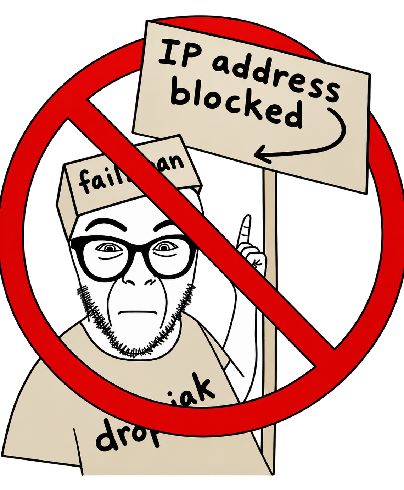

dropjak
Állj!
Azonosítsd magad!
Fiók kérése
Kérj fiókot. Az admin jóváhagyása után beléphetsz.

IP-cím letiltva
Ez az IP-cím fail2ban tiltás alatt áll a túl sok sikertelen belépés miatt. Próbáld újra később.
Hátralévő tiltás
--:--
A tiltás automatikusan lejár, utána ismét beléphetsz.
Kétfaktoros azonosítás
Írd be a hitelesítő alkalmazásban látható 6 jegyű kódot.
Kétfaktoros azonosítás beállítása
Olvasd be a QR-kódot a Google Authenticator alkalmazással, majd írd be a 6 jegyű kódot.
Fiók:
Nem működik a QR? Írd be kézzel
Recovery kód
Írd be a fiókodhoz tartozó egyik recovery kódot. Minden kód csak egyszer használható.
Recovery kódok
Írd le őket, többé nem jelennek meg.
Ha most bezárod az oldalt, a kódok elvesznek.
dropjak
Belépve:—
felhasználó
Válassz hozzáférési szabályt
Nincs hozzád rendelt hozzáférési szabály.
Szólj az adminisztrátornak, hogy osszon ki egyet.
Szólj az adminisztrátornak, hogy osszon ki egyet.
Kapcsolat nyitva
Szabály—
Hátralévő idő--:--
Kilépéskor a hálózati hozzáférés azonnal megszűnik.